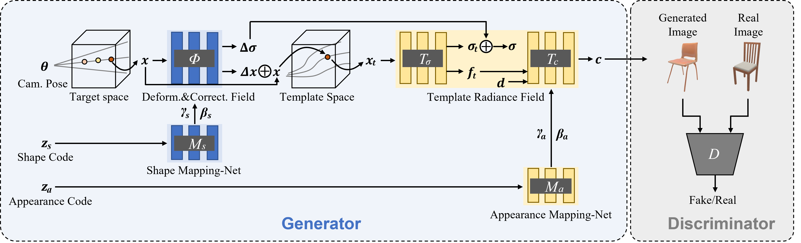

Generative Deformable Radiance Fields for Disentangled Image Synthesis of Topology-Varying Objects
The 30th Pacific Graphics Conference (PG 2022) (& Computer Graphics Forum, CGF)

Abstract
3D-aware generative models have demonstrated their superb performance to generate 3D neural radiance fields (NeRF) from a collection of monocular 2D images even for topology-varying object categories. However, these methods still lack the capability to separately control the shape and appearance of the objects in the generated radiance fields. In this paper, we propose a generative model for synthesizing radiance fields of topology-varying objects with disentangled shape and appearance variations. Our method generates deformable radiance fields, which builds the dense correspondence between the density fields of the objects and encodes their appearances in a shared template field. Our disentanglement is achieved in an unsupervised manner without introducing extra labels to previous 3D-aware GAN training. We also develop an effective image inversion scheme for reconstructing the radiance field of an object in a real monocular image and manipulating its shape and appearance. Experiments show that our method can successfully learn the generative model from unstructured monocular images and well disentangle the shape and appearance for objects (e.g., chairs) with large topological variance. The model trained on synthetic data can faithfully reconstruct the real object in a given single image and achieve high-quality texture and shape editing results.
Overview

Overview of our generative deformable radiance field. It consists of a template radiance field conditioned on a appearance code , and a deformation field and a correction field conditioned on a shape code. A discriminator is introduced for adversarial learning between generated images and real ones. All networks are train end-to-end on a collection of color images.
Generation Results
Shape and Appearance Code Swap
Comparison
The images on the diagonal are the reference instances and others are generated by combining the row-wise shape code and column-wise appearance code. Our method achieves much better shape and appearance disentanglement than EditNeRF and CodeNeRF (e.g., see the color of car roof in the column-wise texture swapping results)
Latent Space Interpolation
Our disentanglement design makes it possible to interpolate either shape and appearance while keeping the other unchanged.